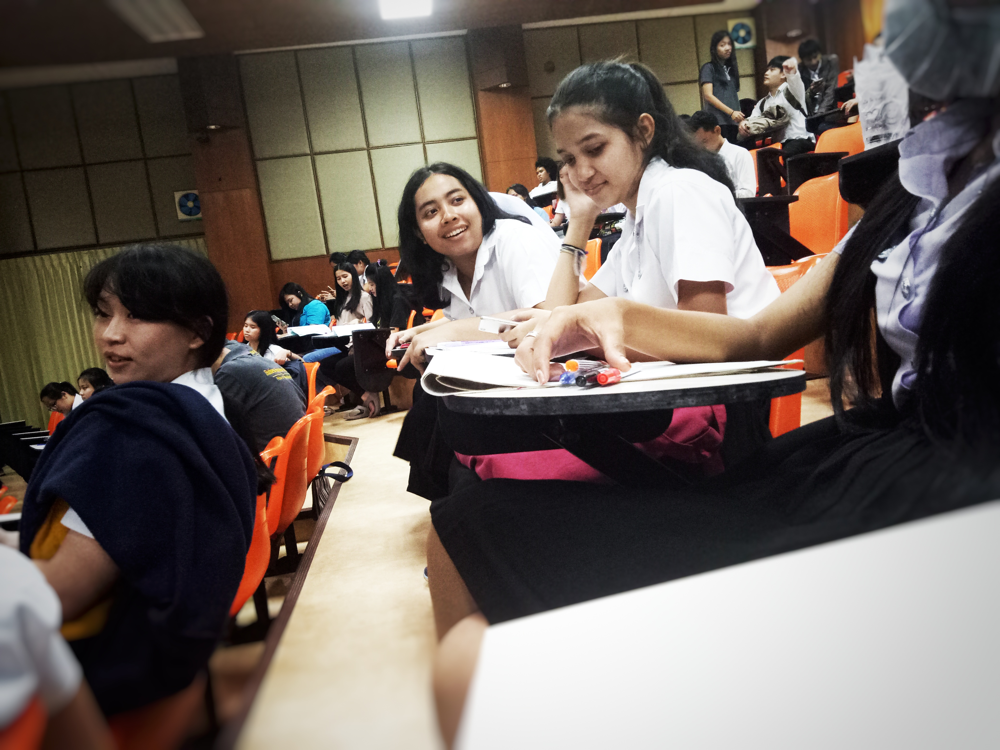

Study Day
เมื่อเป็นนักศึกษาก็หนีการเรียนไม่พ้น เพราะเป็นหน้าที่ แต่จะทำหน้ที่ยังไงให้สนุกไปกับมันด้วย
""

การเรียนแต่ละวันก็มีวิชาที่แตกต่างกันไป มีวิชาที่ชอบบ้าง ไม่ชอบบ้าง แต่จะทำอย่างไรให้ เราสามารถ enjoy กับสิ่งที่ไม่ชอบให้มากที่สุด คำตอบนั้น คือเพื่อน
เพราะเพื่อนนี่แหละคือคนที่ทำให้สิ่งที่ดูเหมือนจะไม่สนุก น่าเบื่อ สนุกขึ้นมาได้
งานไหนที่ทำไม่ได้ วิชาไหนที่ทำใจให้ชอบไม่ได้ ทำใจตื่นขึ้นมาเรียนไม่ได้ เพื่อนนี่แหละที่คอยทักปลุกแต่เช้า ชีวิตมหาลัยเป้นช่วงเวลาเก็บเกี่ยวหลายๆอย่าง ทุกๆคนควรเก็บ
เกี่ยวในสิ่งที่ตัวเองอยากจะได้ให้มากที่สุด เพราะแม้จะสั้น แต่ความสำคัญก็มาก